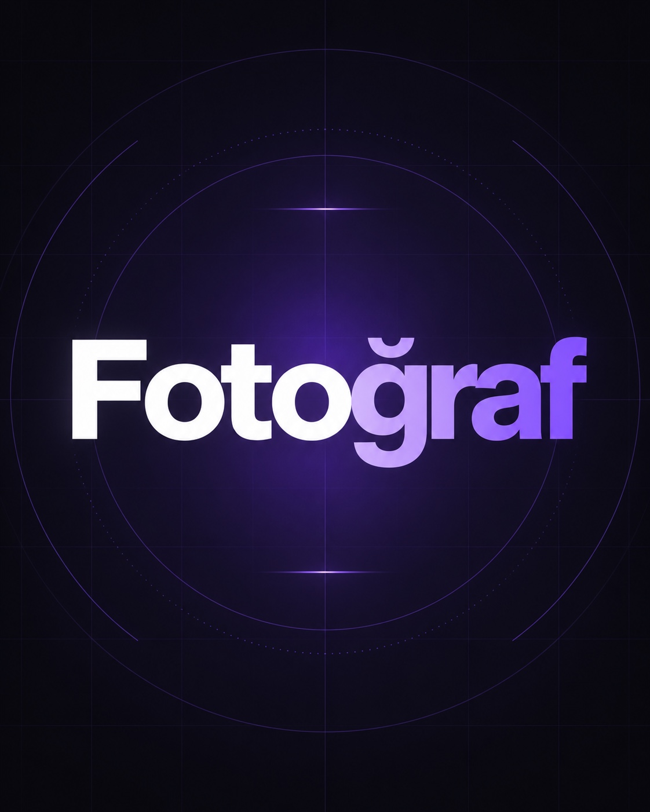

PORTFOLYO / FOTOĞRAF
Fotoğraf.
Konser, etkinlik, ürün, portre ve marka hikâyeleri için; ışığı, anı ve kullanım alanını birlikte düşünerek üretilen fotoğraf serileri.
← İşlere Dön
KATEGORİLER
Konser, etkinlik, ürün, portre ve marka hikâyeleri için; ışığı, anı ve kullanım alanını birlikte düşünerek üretilen fotoğraf serileri.
← İşlere Dön